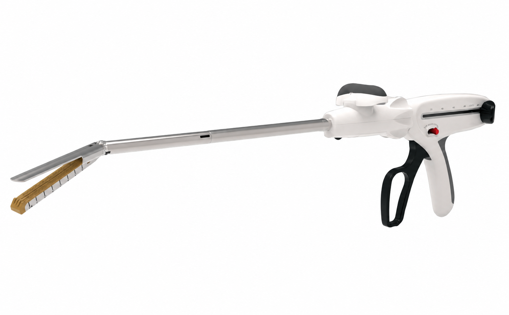

Indicada para resección, transección y anastomosis de tejido pulmonar, bronquial, gástrico e intestinal — en cirugía abierta o endoscópica.

Indicada para resección, transección y anastomosis de tejidos pulmonares y bronquiales, estómago e intestino, en cirugía abierta o endoscópica.
| Modelo | Longitud de camisa (sleeve) | Diámetro |
|---|---|---|
| CN-ED12K-S / CN-ED12KT-S | 85 | Φ12.4mm |
| CN-ED12K-C / CN-ED12KT-C | 155 | Φ12.4mm |
| CN-ED12K-L / CN-ED12KT-L | 255 | Φ12.4mm |
| Modelo | Altura de grapa | Long. de sutura | Color de reload |
|---|---|---|---|
| CN-CCR30-W | 2.0, 2.5, 3.0 | 33 | Brown |
| CN-CCR30-B | 3.0, 3.5, 4.0 | 33 | Purple |
| CN-CCR30-G | 4.0, 4.5, 5.0 | 33 | Black |
| CN-CCR45-W | 2.0, 2.5, 3.0 | 45 | Brown |
| CN-CCR45-B | 3.0, 3.5, 4.0 | 45 | Purple |
| CN-CCR45-G | 4.0, 4.5, 5.0 | 45 | Black |
| CN-CCR60-W | 2.0, 2.5, 3.0 | 61 | Brown |
| CN-CCR60-B | 3.0, 3.5, 4.0 | 61 | Purple |
| CN-CCR60-G | 4.0, 4.5, 5.0 | 61 | Black |
| CN-CCR75-W | 2.0, 2.5, 3.0 | 73 | Brown |
| CN-CCR75-B | 3.0, 3.5, 4.0 | 73 | Purple |
| CN-CCR75-G | 4.0, 4.5, 5.0 | 73 | Black |
| Modelo | Altura de grapa | Long. de sutura | Color de reload |
|---|---|---|---|
| CN-CCRE30-W | 2.0, 2.5, 3.0 | 33 | Brown |
| CN-CCRE30-B | 3.0, 3.5, 4.0 | 33 | Purple |
| CN-CCRE30-G | 4.0, 4.5, 5.0 | 33 | Black |
| CN-CCRE45-W | 2.0, 2.5, 3.0 | 45 | Brown |
| CN-CCRE45-B | 3.0, 3.5, 4.0 | 45 | Purple |
| CN-CCRE45-G | 4.0, 4.5, 5.0 | 45 | Black |
| CN-CCRE60-W | 2.0, 2.5, 3.0 | 61 | Brown |
| CN-CCRE60-B | 3.0, 3.5, 4.0 | 61 | Purple |
| CN-CCRE60-G | 4.0, 4.5, 5.0 | 61 | Black |
| CN-CCRE75-W | 2.0, 2.5, 3.0 | 73 | Brown |
| CN-CCRE75-B | 3.0, 3.5, 4.0 | 73 | Purple |
| CN-CCRE75-G | 4.0, 4.5, 5.0 | 73 | Black |
| Modelo | Altura de grapa | Long. de sutura | Color de reload |
|---|---|---|---|
| CN-CCRC30-W | 2.5 | 33 | White |
| CN-CCRC30-B | 3.5 | 33 | Blue |
| CN-CCRC30-Y | 4.0 | 33 | Yellow |
| CN-CCRC30-G | 4.8 | 33 | Green |
| CN-CCRC45-W | 2.5 | 45 | White |
| CN-CCRC45-B | 3.5 | 45 | Blue |
| CN-CCRC45-Y | 4.0 | 45 | Yellow |
| CN-CCRC45-G | 4.8 | 45 | Green |
| CN-CCRC60-W | 2.5 | 61 | White |
| CN-CCRC60-B | 3.5 | 61 | Blue |
| CN-CCRC60-Y | 4.0 | 61 | Yellow |
| CN-CCRC60-G | 4.8 | 61 | Green |
| CN-CCRC75-B | 3.5 | 73 | Blue |
| CN-CCRC75-Y | 4.0 | 73 | Yellow |
| CN-CCRC75-G | 4.8 | 73 | Green |
El diseño escalonado del cartucho facilita evacuar fluidos de ambos lados durante el cierre y disparo, y comprime el tejido al grosor adecuado para el grapado — reduciendo el daño por compresión sin comprometer la fuerza de sujeción.
Grapas con alturas desiguales garantizan mejor irrigación sanguínea y cicatrización más rápida, lo que se traduce en mayor adaptabilidad del tejido.